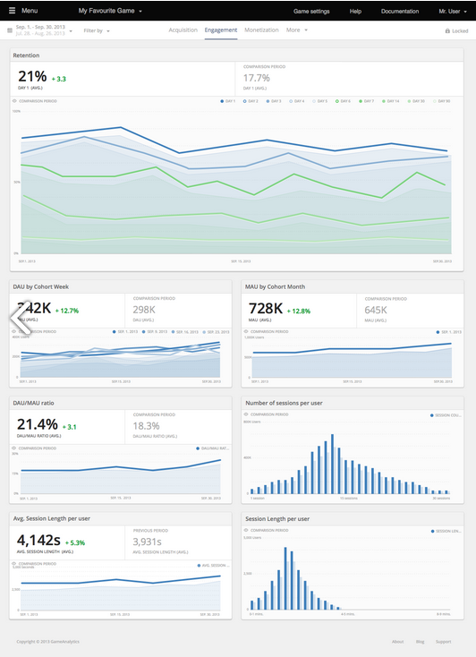

Hoje em dia existem ferramentas para sabermos exatamente quais partes do jogo que os jogadores estão interagindo mais, como o Game Analytics, que permite que os desenvolvedores corrijam falhas de game design que eles não sabiam que estavam lá.
Mesmo empresas grandes, com grandes equipes de desenvolvimento e testes, não podem prever exatamente tudo que os jogadores irão interagir no jogo. Por isso, ferramentas como o Game Analytics são muito importantes. Sua ideia é simples, o desenvolvedor só precisa colocar nos lugares certos do seu código uma chamada de um método do SDK do Game Analytics, que possui versões para várias tecnologias. Assim, o jogo enviará estatísticas para o site, e irá gerar relatórios indicado tudo que o desenvolvedor precisa saber.
Você pode ver quais são os menus mais acessados, os itens mais usados, as opções mais selecionadas, tudo! São infinitas possibilidades que estes dados permitem, mas é necessário adicionar os eventos em locais certos do código, se não os dados podem vir errados. Além de eventos, é possível fazer o mapeamento de dados mais simples, como quantidade de acesso por dia, por exemplo.

É de se surpreender o que este tipo de informação pode fazer. Você pode descobrir que um modo de jogo que acha ser mais divertido é o menos jogado, enquanto um outro é o preferido dos jogadores. E com estas informações você pode fazer updates mais precisos para realmente melhorar o gameplay do jogo, e atrair mais jogadores.
Se você usa Unity, vai gostar muito de uma funcionalidade do Game Analytics chama heatmap, que destaca as áreas do mapa do jogo através de um mapa de calor por cima do cenário. Assim, você consegue ver claramente os caminhos que os jogadores fazem, e as áreas que eles menos exploram.

Além do Game Analytics existem outras empresas que fazem isso, como o Flurry, e ambas são gratuitas. Isto não é algo de outro mundo, todas as empresas grandes fazem isso há anos, e agora existem tecnologias que qualquer pessoa pode adicionar em seu jogo. Porém, algumas empresas incluem em seus jogos alertas informando que estes dados são coletados com objetivo de análise para melhorar o jogo, e que nada pessoal é armazenado. Algumas empresas colocam até uma opção em seus jogos para que o jogador possa desligar o envio de dados estatísticos para a empresa.
Este é um grande de exemplo do uso da tecnologia para melhorar os jogos, vale a pena usar! Lembre-se: não é preciso uma grande empresa para fazer grandes jogos, você só precisa aprender a usar técnicas e ferramentas mais profissionais.